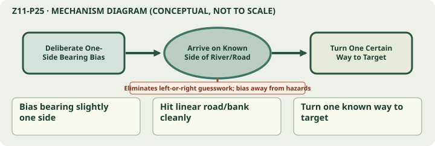

Z11-P25 · Navigation, weather and rescue · New manuscript
Apply deliberate aiming-off to reach an exact target on a linear feature
Eliminate left-or-right guesswork when approaching a small camp, bridge or trailhead located along a road or shoreline.
When it applies · Walking a compass leg toward a specific point situated on a linear feature (river, road, lakeshore or main trail).
Equipment · Topographic map and baseplate compass with current declination set.

Actions
- Recognize that even skilled compass walkers drift slightly left or right over distance—if you aim dead-center at a bridge on a river and hit the bank slightly off, you will not know whether to turn left or right.[N08, ED]
- Deliberately bias your compass bearing a few degrees to one known side (for example, aiming slightly upstream of a bridge or east of a trailhead on an east-west road) so you arrive with certainty on that known side.[N08, N03, ED]
- Upon reaching the linear road, trail or bank, turn confidently in the single known direction toward your target until you reach it.[N08, N03, ED]
Failure recognition · Walking straight at a small hidden dock on a long wooded shoreline, missing by 100 yards and turning the wrong direction for miles.[N08, T06]
Verify · State clearly before starting the leg which side you aimed off toward and which way you will turn upon hitting the linear feature.[N08, ED]
Stop or change course · Never aim off toward a hazardous cliff, swamp or river confluence—always choose the safer, unobstructed side of the target.[N10, N03, ED]
Evidence and editorial notes
- N03 · USGS · What is a Topographic Map (current web edition)
- Section: What is a Topographic Map > Contours and Relief · Conditions: Matching three-dimensional terrain shapes to two-dimensional contour lines
Support: Closed contour rings denote peaks or depressions (hachured), V-patterns point uphill in valleys/drainages and wide spacing marks gentle slopes while tight spacing marks cliffs or steep grades.
Limitations: Dense forest canopy or snow drifts can obscure subtle terrain features shown on the map. · Conflicting evidence: None; core topographic terrain-association evidence.
Editorial note: Supports ridge, valley, saddle and handrail terrain-interpretation cards. · Specialist reviewer: Navigation and cartography
Primary source · checked 2026-11-24
Current assessment · A04-N03 (2026-11-25) · Open: support partial or missing (A04): Contours and depression symbols supported. The broad V/uphill and cliff inference depend on drawing context and saddle/ridge distinction; require dedicated examples. Limits: Specialist review PENDING (Navigation and cartography); publication HOLD. All release decisions pending. - N08 · NOAA NCEI · Magnetic Declination (current web edition)
- Section: NOAA Magnetic Declination > definition and true-bearing conversion · Conditions: Using magnetic baseplate compasses near metal, electronics or iron-rich rock
Support: Declination is between true and magnetic north and varies by location and time. Grid convergence is separate. A device may already apply a correction.
Limitations: NOAA definition does not establish site-specific interference distances or diagnosis of magnetic anomalies. · Conflicting evidence: Aligns with B014-P13 and B014-P14.
Editorial note: Grounds declination conversion, metal-clearance and magnetic-anomaly cards. · Specialist reviewer: Navigation and geophysics safety
Primary source · checked 2026-11-24 - N10 · NWS · Turn Around Don't Drown (current web edition)
- Section: Turn Around Don't Drown > Flooded Crossings and Terrain Detours · Conditions: Navigating around flooded streams, washes and submerged roads
Support: Water barriers and flooded crossings conceal washed-out banks, swift undercurrents and deep holes; detour along verified dry high-ground routes or hold in a safe elevated spot.
Limitations: Applies equally to foot and vehicle navigation. · Conflicting evidence: Aligns with B014-P12 and T07.
Editorial note: Connects navigation rerouting to flood and water-barrier boundaries. · Specialist reviewer: Search and rescue and emergency management
Primary source · checked 2026-11-24 - T06 · NPS · Outdoor Emergency Plan (current web edition)
- Section: If you get lost or hurt; call for help · Conditions: Outdoor US emergency
Support: Communicate location, last known point, situation and needs. Stay put when unable to establish a safe route unless immediate danger requires movement.
Limitations: Cell signal is unreliable in backcountry terrain; pre-trip plans bridge communication gaps. · Conflicting evidence: None; core lost-person decision rule.
Editorial note: Foundation for stay/signal/move and dispatch handoff cards. · Specialist reviewer: Search and rescue
Primary source · checked 2026-11-24
Source lineage · Navigation geometry and NOAA declination; new manuscript · Classification · New manuscript.